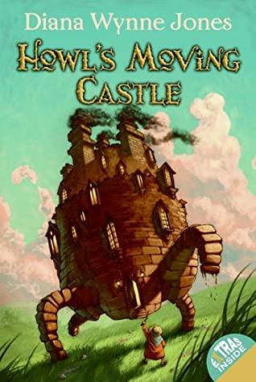
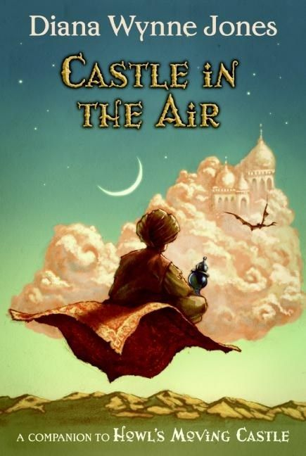
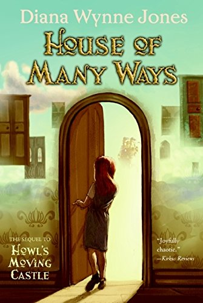
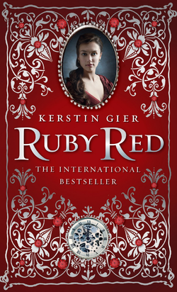
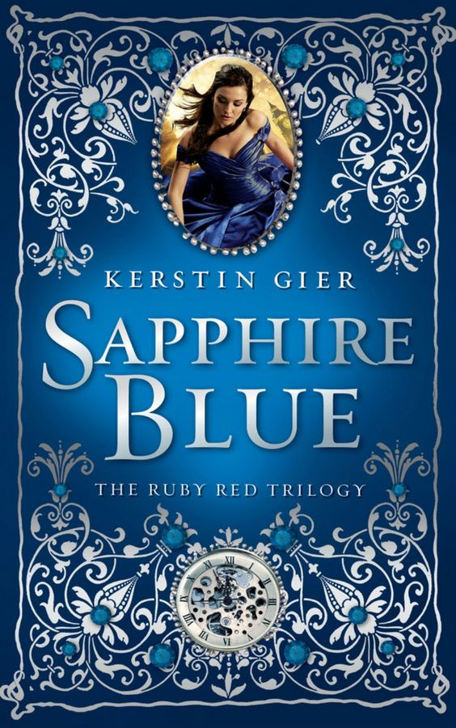
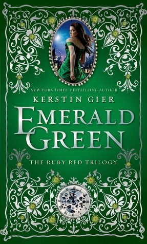

Sophie Hatter has the misfortune of being the eldest of three sisters, signing herself
to continue her father's business. Her supposedly uninteresting life takes a turn as she
gets cursed by the Witch of the Waste, and she sets off to the Moving Castle.
The first book revolves around Sophie's adventures and her gradually gaining confidence,
while the second and third book of the Castle series revolve around different characters
that soon have their connection to the original protagonists, Howl and Sophie.

Castle in the Air is the sequel to Howl's Moving Castle, the second book of the Castle Series.
This book features Abdullah and his self-proclaimed mission of saving Flower-in-the-Night.
He, along with his new-found partner, a lone soldier, set off to find Flower-in-the-Night.
Despite being a sequel to Howl's Moving Castle, it does not feature Howl and Sophie until later
on in the book.

House of Many Ways features the respectable Charmain Baker who is left
to care for her great-uncle william's house. She comes from a well-off family, and
despite agreeing to take on the job, Charmain knows nothing about house-keeping.
As Charmain figures out her way in the enchanted house, she's kept company by Waif,
great-uncle William's new dog.
This is the last book of the Castle Series, and features the complicated and enchanted
house of Charmain's great-uncle William.

In the first book of the Ruby Red Trilogy, Ruby Red, Gwyneth Shepherd discovers her unique ability to time travel.
She meets interesting new people throughout her journey- that was supposed to be her cousin's, Charlotte Montrose. As
unprepared as Gywenth may be, she endures as she takes an unexpected spin into a different timeline in the middle
of class.
Follow Gwyneth as she narrates her unique experience!

Sapphire Blue is the second book of the Ruby Red Trilogy.
It follows Gwyneth once more as she unravels more mysteries and adventures. This time, an unusual companion
sticks to her side and follows her through her cornmaze of a life.
The tricky timeline of her ability's history only gets trickier as problems arise.

As Gwyneth's problems gain their solutions, her hectic story comes to a close in the last book of the Ruby Red
Trilogy, Emerald Green. Her confusion is cleared up, the villain is defeated, and her love life is finally settled.
As the trilogy comes to a close, the ending is still not the last moment of Gwyneth's life. It's somewhat an ending
open to predictions and theories as to what might happen next.